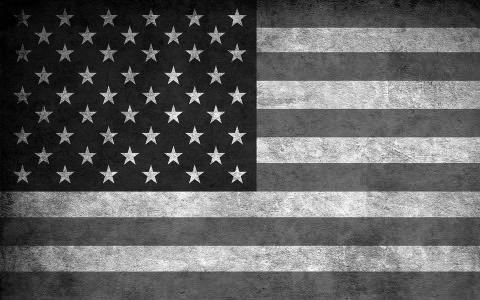
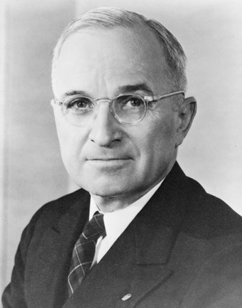
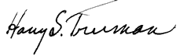
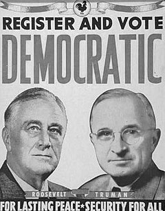
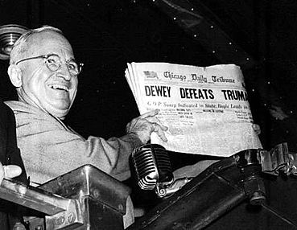

Desi Germania a capitulat la doar cateva saptamani dupa ce Truman a devenit presedinte, razboiul cu Japonia parea ca va mai dura cel putin un an. Truman a ordonat utilizarea armelor atomice Impotriva Japoniei, cu scopul de a forta capitularea Japoniei si de a evita mortile In randurile americanilor ce ar fi putut surveni In urma unei invazii; hotararea sa ramane In continuare controversata, dar a fost unul din factorii principali care au dus la Incheierea luptelor din Pacific.

Truman s-a nascut In Missouri , si si-a petrecut mare parte din tinerete la ferma familiei lui. In timpul Primului Razboi Mondial, Truman a luptat In Franta ca ofiter de artilerie In unitatea Garzii Nationale din Missouri. Dupa razboi, a fost pentru scurt timp proprietarul unei mercerii si a intrat In masina politica democrata a lui Tom Pendergast din Kansas City, Missouri. Prima functie publica In care a fost ales a fost cea de consilier local al comitatului, iar In 1935 a devenit senator federal de Missouri. A devenit cunoscut In toata tara ca presedinte al Comisiei Truman care a activat In timpul razboiului si a scos In evidenta risipa de bani publici, frauda si coruptia din jurul unor contracte pentru efortul de razboi.


Vicepresedintele Henry Wallace , desi popular In randul electoratului democrat, era considerat a fi prea de stanga si prea prieten cu cercurile sindicale pentru unii dintre consilierii lui Roosevelt. Stiind ca s-ar putea ca Roosevelt sa nu traiasca pana la sfarsitul celui de al patrulea mandat, atat presedintele cat si cativa dintre confidentii sai au Inceput sa actioneze pentru Inlocuirea lui Wallace. Presedintele la final de mandat al Comitetului National al Partidului Democrat Frank C. Walker, succesorul sau Hannegan, trezorierul partidului, Edwin W. Pauley, strategul Ed Flynn, primarul orasului Chicago Edward Joseph Kelly si lobbyistul George E. Allen doreau cu totii ca Wallace sa nu mai candideze pentru vicepresedintie.Roosevelt a spus liderilor partidului ca va accepta fie pe Truman, fie pe judecatorul Curtii Supreme William O. Douglas. Liderii de partid de la nivel de stat si oras Il preferau pe Truman, iar Roosevelt a acceptat. Truman nu a facut niciun fel de campanie pentru a obtine candidatura, desi s-a bucurat de atentia primita, pe care o considera un semn ca devenise mai mult decat „senatorul lui Pendergast”.
Nominalizarea lui Truman, poreclita „al Doilea Compromis Missouri", a fost bine primita, iar candidatura Roosevelt–Truman a castigat cu 432–99 In Colegiul Electoral, Invingand candidatura guvernatorului statului New York Thomas E. Dewey si a guvernatorului statului Ohio John Bricker. Truman a depus juramantul ca vicepresedinte la 20 ianuarie 1945.

Scurta vicepresidintie a lui Truman a fost lipsita de evenimente. Si-a dat votul de departajare In calitate de presedinte al Senatului la confirmarea fostului vicepresedinte Henry Wallace In functia de secretar pentru comert. Roosevelt nu prea Il contacta, nici macar pentru a-l informa de vreo decizie majora; presedintele si vicepresedintele au avut doar doua Intrevederi exclusive In timpul perioadei petrecute Impreuna la conducerea tarii. Intr-una din primele sale actiuni ca vicepresedinte, Truman a generat unele controverse cand a participat la Inmormantarea lui Pendergast, care cazuse In dizgratie. La criticile primite, el a raspuns doar: „mi-a fost mereu prieten, si la fel eu i-am fost lui”.El discutase rareori politica externa sau interna cu Roosevelt si era neinformat In ce priveste initiativele majore legate de mersul razboiului si In ce priveste proiectul strict secret Manhattan, care era pe cale sa testeze prima bomba atomica din lume.
Truman fusese vicepresedinte timp de numai 82 de zile cand presedintele Roosevelt a murit la 12 aprilie 1945. In acea dupa-amiaza, Truman prezida, ca de obicei, sedinta Senatului. Tocmai Incheiase lucrarile Senatului pentru ziua respectiva si se pregatea sa bea un pahar cu speakerul Camerei Sam Rayburn In biroul acestuia, cand a primit un mesaj urgent sa mearga imediat la Casa Alba. Truman a crezut ca presedintele Roosevelt doreste sa-i vorbeasca, dar Eleanor Roosevelt l-a informat ca sotul ei murise In urma unei hemoragii cerebrale masive. Truman s-a aratat Ingrijorat pentru doamna Roosevelt si a Intrebat-o daca poate face ceva pentru ea. Ea i-a raspuns: „Este ceva ce noi putem face pentru tine? Tu esti cel In necaz acum!”.